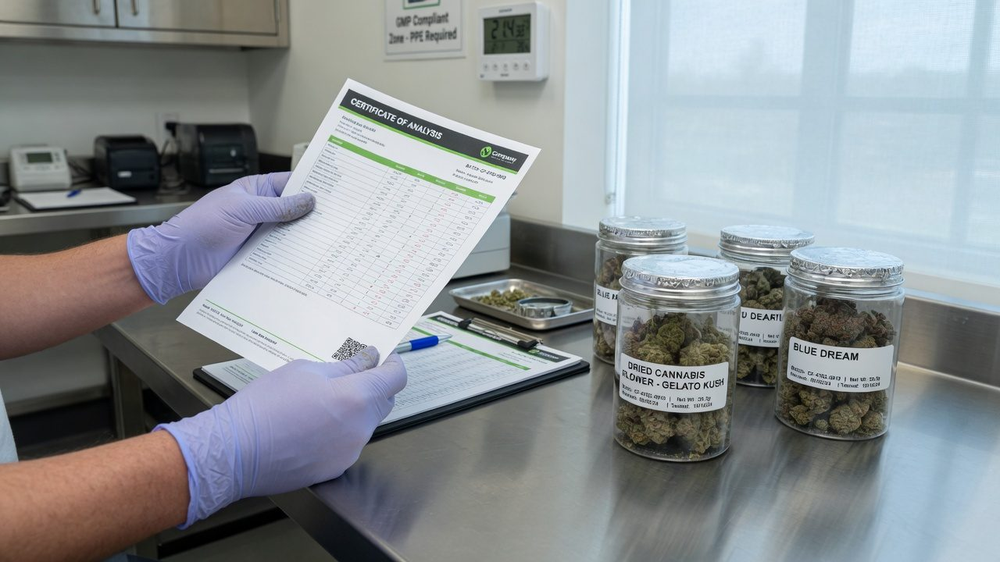
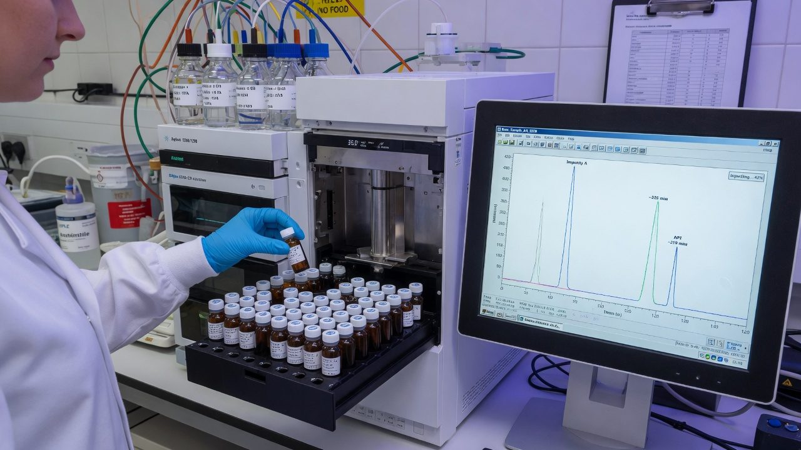
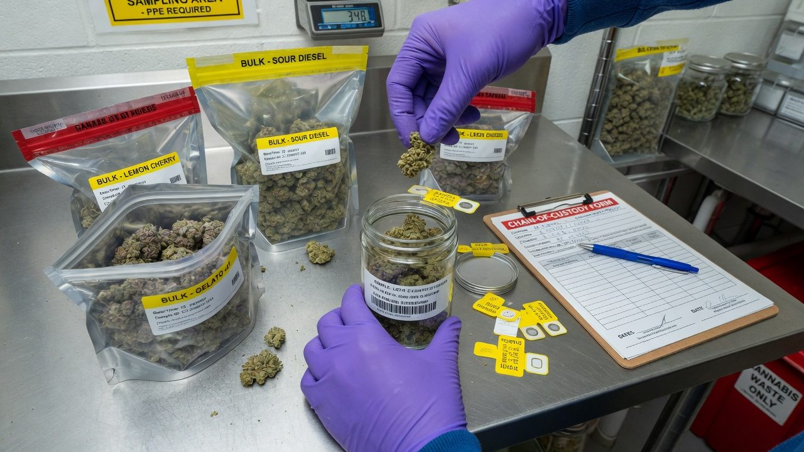
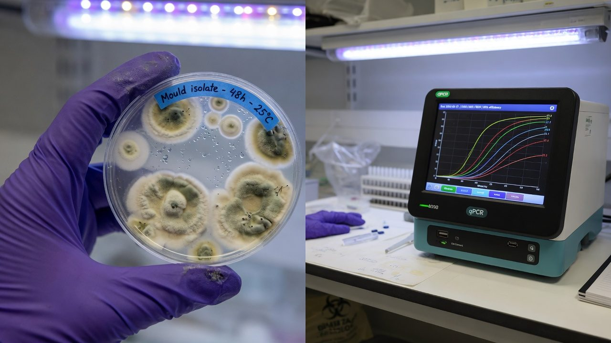

Laboratory testing, potency and the COA
A certificate of analysis (COA) is a measurement of one small sample and is not a property of your crop. This paper shows how to read a COA row by row and how to calculate the total THC again. It gives the chemistry behind the 0.877 factor. It tells you about each type of test, from qPCR to ICP-MS. It also gives the facts about numbers that are too high. Tests find this problem frequently in cannabis markets.
Purpose and scope
For each batch that you supply to a buyer, a testing laboratory gives a certificate of analysis (COA). In a system for medicinal cannabis, the laboratory also gives a COA for each batch that you release. The COA is a document of one page. It shows the materials that the flower contains (cannabinoids and terpenes) and the materials that the flower must not contain (mold, heavy metals, pesticides, and mycotoxins).
Most buyers read only one number on the COA. This number is total THC, and it changes the price. Thus some persons try to get a higher value for this number more frequently than for other numbers. Tests with peer review show a systematic error. The values on labels in the retail market are too high[1][2].
One fact is important for all sections of this paper. A COA is not a property of your crop. A COA is the measurement of one small sample. A person collected the sample with one method. The laboratory prepared it with one method and measured it with one instrument on one day.
If one of these items changes, the number changes. Fraud is not necessary for this change. This fact is the cause of many problems in cannabis testing. Some persons do not know it, and some persons use it to get a higher price. Examples are the same product with a different number and labels with numbers that are too high. One more example is the selection of a laboratory for its high numbers.
The COA gives information for one sample. The sample is approximately one gram. One laboratory measured it with one procedure on one day. Correct sampling and a laboratory with accreditation make this information accurate for the sample that the laboratory measured. But the information is for one sample and not for your crop. All the sections of this paper help you to know how accurately that sample shows the properties of your batch.
Evidence and limitations
We want each paper to be correct. Thus we examine each paper for information that is not solid. This information comes from the view of one grower, from a small number of sources, or from grower methods that have no controlled test. We identify this information, and we do not show it as solid.
Frequently there is no paper for the decision that you must make. Then we use the reports of other growers and the methods that work in the rooms that we know. This information can help you, but it is not the result of a laboratory test. Use the methods that work for your plants, for your room and for your meters. If a table does not agree with your crop, use the data from your crop and record the difference.
- The primary definitions and the units of measurement in the paper
- Safety limits that have a citation to a regulation or a specification
- Target ranges for light, climate and feed in each stage. They are start values that you can change.
- SOPs that work in many rooms, but you must adjust them for your genetics and meters
- A number for yield or potency that you will always get, with no test at many sites
- Controller setpoints from a different facility, with no new calibration
If you find an error, make a report. We will correct it. Make the report on GitHub, with the name of the paper and the information that is incorrect. If you have a source, include it: Make a report of an accuracy problem. The regulations, labels and licenses of your area always override each procedure in these papers. The label weak in a paper shows the points where the risk of an error is highest.
Primary items of laboratory testing
To read a COA in sixty seconds, examine these eight items in this sequence:
- The laboratory. Make sure that the COA gives the name of the laboratory and an accreditation that you can examine (ISO/IEC 17025 or, in systems for medicinal cannabis, a GMP certificate)[16].
- The sample. Find the sample ID, the batch, the matrix, and the sample mass. Most important, find the person who collected the sample. ‘Client-submitted’ shows that the laboratory did not see your batch.
- The basis. Find the basis (dry-weight or as-received) and the moisture content. The basis changes the potency by approximately 10 to 15%.
- The potency table. A row for the acids (THCA) and a row for the neutral cannabinoids (THC) show an HPLC method. Then calculate the total THC: total THC = Δ9-THC + 0.877 × THCA. The result must agree with the total on the COA.
- The units. The units % w/w and mg/g measure the same quantity (1% = 10 mg/g). Do not let a change of unit cause an error.
- Each type of contaminant (microbes, metals, pesticides, mycotoxins, and solvents) has a different test and a different method. The result of each test is satisfactory or unsatisfactory. The potency does not give information about safety.
- The footnotes. Find the LOQs, the definition of ‘ND’, and the references to the methods. If the COA has no LOQ column, you do not know the limit for the result ‘ND’.
- The signature. Find a signature with a name and a date from a person in QA. In GMP systems, this signature makes the COA a decision to release the batch and not a tool for marketing[15].
This paper also gives the facts about numbers that are too high. Tests with peer review show that the potency values on labels in some legal markets have a systematic error. In one test, the measured value of 70% of the Colorado flower samples was more than 15% less than the label value[1]. In an audit of three states, the measured value of 70% of the samples was not in the range of ±20% of the label value[12]. The number of products with a value that is a small quantity more than the price threshold of 20% THC is too high[2].
When one number sets the price, some persons will try to change it. Your protection is to know how the laboratory makes the number. The remaining sections of this paper give this information.
Laboratory testing procedure
The COA is the last item of a sequence of steps that starts when a person collects the sample. Each step changes the numbers on the COA. The sampling and the sample preparation change the numbers more than the instrument does.
Each type of test uses different physics. Thus a laboratory has approximately six instruments:
| Type of test | Analytes | Typical instrument | Typical time |
|---|---|---|---|
| Potency (cannabinoids) | THCA, Δ9-THC, CBDA, CBD, CBGA, minor cannabinoids | HPLC-DAD (liquid chromatography) | 1–3 days |
| Terpenes | volatile compounds of the aroma (for example myrcene and limonene) | GC-MS / GC-FID (gas chromatography) | 1–3 days |
| Microbes | TAMC, TYM, pathogens, Aspergillus | Culture plates (CFU) or qPCR (DNA) | 3 to 7 days for plates and hours for qPCR |
| Heavy metals | arsenic, cadmium, lead, mercury | ICP-MS after acid digestion | 1–3 days |
| Pesticides | panels of many pesticide residues | LC-MS/MS + GC-MS/MS | 2–5 days |
| Mycotoxins | aflatoxins B1/B2/G1/G2, ochratoxin A | LC-MS/MS | 2–5 days |
| Residual solvents | for example butane, ethanol, and acetone | headspace GC | 1–3 days |
| Moisture / water activity | water content and how available the water is | loss-on-drying balance and aw meter | same day |
Tests with culture are slow. Some days are necessary for colonies to increase in size. qPCR decreases this time to a number of hours. The short time is one cause of the change to qPCR in laboratories and authorities. The section on microbes below compares the two methods.

How to read a certificate of analysis
This section has an example COA. It is from a laboratory with the example name Example Analytical Ltd. The COAs of most laboratories have the same blocks in the same sequence. The COA has eight areas with numbers. Examine the areas in the sequence of the numbers.
- 1Name and accreditation of the laboratoryA COA from a laboratory with accreditation gives the name, the address, and the accreditation number of the laboratory. Compare these data with the public register of the authority that gave the accreditation. A PDF with a logo and no accreditation number is only a claim.
- 2Report ID and versionA report has one version. A laboratory can make a new version (‘v2’) of a report for a correct cause. But if each new version only increases the THC value, tell the laboratory to give the cause.
- 3Sample informationThis block gives the sample ID, the batch or lot, and the matrix. It also gives the mass that the laboratory received and the dates. It shows the person who collected the sample. ‘Client-submitted’ shows that the number is for the material in the bag that you sent. This result is very different from the result for a batch with a sample that the laboratory collected.
- 4Basis and moistureThis block gives the basis (as-received or dry-weight) and the measured moisture. Without this row, you cannot compare two COAs. The section on the basis below gives more information.
- 5The potency tableThis block has a row for THCA and a row for Δ9-THC (the two rows show an HPLC method). It also has the minor cannabinoids and a total with an asterisk (*). Calculate the total THC: total THC = Δ9-THC + 0.877 × THCA. In the example, 0.92 + 0.877 × 24.20 = 22.14%. This result agrees with the total on the COA. If the values are not the same, find the cause before you accept other data on the page.
- 6Footnotes and LOQs‘ND’ shows that the laboratory did not find the analyte in a quantity more than the limit in the report. It does not show zero. The LOQ column gives this limit, and thus you can use the result ‘ND’. If the report has no LOQ column, the report is defective.
- 7Contaminant panelsEach type (microbes, metals, pesticides, mycotoxins, and solvents) is a different test on a different part of the sample. A COA can show a very high THC number and an unsatisfactory result for Aspergillus.
- 8Signature for release and the last clauseA person from QA gives a name and a date. Then there is an ISO clause that limits the results: ‘Results relate only to the sample as received’. This clause shows the limit of all the data above it.
If you speak to a laboratory with accreditation, the laboratory can tell you if a report number is correct. Many laboratories give a QR code or a link that you can use to examine the report. In all markets, some COAs are not from the laboratory that the COA shows, and a person changed some COAs. A check of two minutes can prevent a problem with a buyer after you supply the batch.
Total THC: how to calculate it, and the chemistry
The plant makes almost no THC. It makes THCA (tetrahydrocannabinolic acid). THCA is THC with an attached chemical group (–COOH). This group makes THCA a non-intoxicating cannabinoid. THCA is also approximately 13% heavier than THC.
Heat removes this group as CO₂ gas. This reaction is decarboxylation[4]. After the reaction, the compound is chemically different. The heat of a flame, a vaporizer, or an oven causes this reaction. Thus this reaction makes most of the THC that a person uses.
The 0.877 factor is a ratio of molecular weights. It is not a correction. THC has a molecular weight of 314.5 g/mol, and THCA has a molecular weight of 358.5 g/mol. The ratio is 314.5 ÷ 358.5 = 0.877. Thus the standard formula for labels is:
Authorities and laboratories use this method to calculate the ‘total potential THC’[2][3]. The result is a maximum. The method is correct only if all the THCA molecules change to THC. But the heat does not change all the THCA. The quantities of THCA and THC decrease before a person uses them.
A test with controlled conditions measured the speed of the conversion. In an open reaction vessel, all the THCA changed to THC in approximately 30 minutes at 110 °C (230 °F). The time was approximately 9 minutes at 130 °C (266 °F) and approximately 6 minutes at 145 °C (293 °F). When the test applied heat without light and in a vacuum, no important quantity of CBN (a product of oxidation) occurred[4].
In air, with light, and at higher temperatures, the quantities of THCA and THC decrease more. The formula is correct only if all the THCA changes to THC. Thus the formula gives a maximum and not an estimate of the result.
Decarboxylation also occurs slowly at room temperature, for example during curing and in storage. Some THCA changes to THC, and some THC changes slowly to CBN with oxidation. Thus a previous COA and a new COA for the same batch can show different numbers, and the two numbers can be correct. The material changed.
The change from CBDA to CBD uses a ratio of molecular weights (also 0.877, because the acid has one CO₂ group more than the neutral cannabinoid). The formula is: total CBD = CBD + 0.877 × CBDA. The total of each cannabinoid on a COA must agree with this formula. It is easy to calculate the total again when the result is important.

HPLC and GC for potency testing
Two types of chromatography are the primary methods for potency testing. They do not measure the same molecules. HPLC (high-performance liquid chromatography) moves the extract through a column in a liquid at a temperature near room temperature. Different molecules move through the column at different speeds. Thus THCA and THC go to the detector at different times. They make two different peaks.
GC (gas chromatography) must change the sample to a gas in the hot inlet at approximately 250 to 300 °C (482 to 572 °F). At this temperature, THCA decarboxylates immediately. The acid does not go to the detector as THCA[6].
Only a part of the THCA changes to THC in the inlet, and this part is not constant. A test with THCA without other compounds found that decarboxylation in GC conditions changed only approximately 70% of the acid. The test also showed that the only accurate method is to measure THCA and THC as two values and to add the two values. A measurement after decarboxylation gives a minimum and not the correct value[5].
With GC, the laboratory cannot find the acids, unless it first does derivatization of the acids. Derivatization adds a chemical group to the acid. This group stays on the molecule at high temperature[6].
| HPLC-DAD | GC-FID / GC-MS | |
|---|---|---|
| Temperature of operation | approximately 25 to 40 °C (77 to 104 °F) in the column | approximately 250 to 300 °C (482 to 572 °F) in the inlet, and a hot column |
| Different values for THCA and THC | Yes, two peaks | No, the acid decarboxylates in the inlet |
| Total THC | calculated value: THC + 0.877 × THCA | one peak for THCA and THC (only a part of the THCA changes[5]) |
| Derivatization of the acids is necessary | No | Yes. Without it, the acids break[6] |
| Typical use at this time | potency (the usual method) | terpenes and residual solvents, and potency in some legal markets |
If a flower COA has no THCA row, tell the laboratory to give the method reference. The cause can be a GC method, and then the total is a minimum and not an accurate number. The cause can also be a report that does not show all the data. Each laboratory with accreditation shows the method reference on the COA.
Units and moisture basis
The units are easy. The number in mg/g is the number in % w/w with the decimal point moved by one position to the right. 1% w/w = 10 mg/g. For example, 22.14% = 221.4 mg/g.
Flower COAs usually give the result in %. COAs for oils and edible products frequently give the result in mg/g or in mg for each unit. The only problem is that you do not know the units.
The basis is the primary problem. Flower contains approximately 10 to 13% water after correct drying. The laboratory can calculate a potency percentage for the total mass with this water (as-received or ‘as-is’). The laboratory can also calculate it for the solids only (dry-weight). The flower and the chemistry are the same, but the two numbers are different:
| Moisture content | As-received reading | Dry-weight value |
|---|---|---|
| 8% | 20.0% | 21.7% |
| 10% | 20.0% | 22.2% |
| 12% | 20.0% | 22.7% |
| 15% | 20.0% | 23.5% |
Examine the basis row on each COA before you compare two values. If the two COAs do not have the same basis, change one value to the other basis. Then compare the values. A dry-weight value of 22% and an as-received value of 20% from a different grower have different denominators. Tests with many laboratories show that laboratories give values with important differences, also for the moisture measurement[8]. Thus a small difference of the numbers on two COAs is noise.

Sampling and the accuracy of the result for the batch
The instrument can measure only the sample that the sampling procedure gives. A person does the sampling before the sample goes to the laboratory.
A batch can be 12 kg (26.5 lb). The composite sample is some tens of grams. The part that the laboratory extracts is approximately 0.5 to 1 g (0.02 to 0.04 oz). This one gram must show the batch. Thus the guidance of the pharmacopoeia identifies the sampling procedure as a quality attribute and not only as records[7].
Sampling of cannabis is not easy because the analytes are in the trichomes. The quantity of trichomes is not the same in all parts of the plant. Top colas with more light have a higher potency than buds at the bottom in the shade. Resin falls from small buds when a person touches them. In ground material, the kief falls to the bottom.
A sample from only the best top buds is not a batch sample. It shows only the best part of the batch.
- 1Set the limits of the batch firstA batch has one cultivar, one room, one harvest, and one procedure. If the batch is not the same in all parts, no sampling procedure can correct this.
- 2Collect many small samples and not a grab sampleCollect many small samples from different containers, positions, and depths. Collect also from the middle and from the bottom. Many small samples are better than one large quantity from one position.
- 3Make a composite sample and recordMake a composite sample from the small samples. Record the person who collected each small sample, the position, and the time. This step starts the chain of custody.
- 4Mix before you divide the sampleGrind the sample. Then mix the sample. Do these steps before you remove a part of it. For potency, the laboratory grinds and mixes the part again.
- 5Keep a second sampleDivide the sample into two parts. Keep one part in storage. If you think that a number is incorrect, this part is the only sample that you can measure again.
Do not send samples from only the top colas. These samples make the numbers on the COA and in your production data too high. They also make the buyer think that the batch has a higher quality.
A person will smoke the batch at some time. This person accepted the number. An audit can examine your sampling. Collect each sample for this audit. In systems for medicinal cannabis, an audit will examine your sampling.
Correct sampling also gives a variance that is not zero. When one laboratory measures two composite samples from one batch, the THC values frequently have a difference of approximately one percentage point. A difference of one to two percentage points is noise. It is not information.

Test methods for microbes
A test for microbes measures two types of item. The first type is the number of microbes on the sample. Counts measure this number. The counts are TAMC (total aerobic microbial count), TYM or TYMC (total yeast and mold count), and the count of bile-tolerant Gram-negative bacteria.
The second type is a dangerous microbe on the sample. A test with a yes or no result measures this type for specified organisms. The organisms are Salmonella, E. coli that are pathogens, and the four Aspergillus species that are pathogens in products for inhalation.
| Test | Counted item | Usual type of limit | Information |
|---|---|---|---|
| TAMC | aerobic bacteria (CFU/g) | approximately 10⁵ CFU/g. The value is different in different legal markets[10] | indicator of bioburden |
| TYM / TYMC | yeast and mold (CFU/g) | approximately 10⁴ CFU/g. Persons do not agree about this limit | Flower usually has microbes on the surface |
| Bile-tolerant Gram-negative bacteria | bacteria from the gut | approximately 10³ CFU/g | indicator of hygiene |
| Specified pathogens | Salmonella, shiga-toxin E. coli | not found in 1 g (0.035 oz) | The result is only satisfactory or unsatisfactory |
| Aspergillus (species that are pathogens) | A. fumigatus, flavus, niger, terreus | not found in 1 g (0.035 oz) | usually enrichment + qPCR |
Plates and qPCR can give different results for the same sample. A test with metagenomic sequencing showed that the culture medium selects the organisms. The test sequenced the organisms that became colonies in standard culture tests for yeast and mold of cannabis. The colonies on the plates included bacteria. The plates did not show a sufficient quantity of the fungi that make toxins and that were on the flower. In some tests, the plates can find none of the organisms that are dangerous for patients[9].
qPCR also counts DNA from killed cells. Thus a batch that had a remediation with heat or irradiation can have an unsatisfactory result with qPCR and a satisfactory result with plates.
| Culture plates | qPCR | |
|---|---|---|
| Item measured | organisms that become colonies on that medium at that temperature | copies of target DNA |
| Time | 3–7 days | hours |
| Counts killed organisms | no | yes, the DNA stays after kill steps |
| Species identification | not easy without more tests | The primers identify the species |
| Typical problem | The target organisms do not become colonies, and other organisms become colonies[9] | unsatisfactory results that are incorrect because of DNA from killed organisms, and a primer that does not agree with the target |
Aspergillus in a product for inhalation can cause invasive aspergillosis in patients with a weak immune system. These patients are the persons that use medicinal cannabis. For a patient with a transplant, a satisfactory dose of Aspergillus by inhalation is almost zero. Thus a limit with a number of organisms is not correct for this organism. The specification is: no organism in 1 g (0.035 oz).
Heavy-metal testing by ICP-MS
Cannabis has a high uptake of metals. Growers use hemp for the remediation of soil because of the same trait. The trait also causes the uptake of cadmium and lead from your substrate, fertilizer, and water. The plant keeps them in the tissue.
The panel for metals nearly always has four metals: arsenic, cadmium, lead, and mercury. Some systems use a test for a larger list of elements[8].
| Metal | Typical sources in the flower | Risk |
|---|---|---|
| Arsenic (As) | groundwater, some amendments from rock | carcinogen |
| Cadmium (Cd) | phosphate fertilizers, substrate with contamination | The plant absorbs it easily. It collects in the kidneys. |
| Lead (Pb) | dust, contact with soil, solder and pipes that are not new, materials with contamination | neurotoxin. No value of exposure is safe |
| Mercury (Hg) | not frequent. Water contamination or industrial contamination | neurotoxin |
The instrument is ICP-MS (inductively coupled plasma mass spectrometry). The laboratory mixes the sample with hot acid until only elements in solution stay. Then the laboratory puts a spray of the solution into an argon plasma.
The temperature of the plasma is thousands of degrees. The instrument finds the ions of each element from their mass and counts them. The instrument is very sensitive, in the range of ppb. Thus the LOQs for metals are, for example, 0.01 µg/g.
Flower has an unsatisfactory result for metals because a material supplied the metals. Collect the COAs for each lot of fertilizer and substrate. Do a test of the source water. Then you can find the cause of an unsatisfactory result for metals in your records. The limits for inhalation are very low. Thus one lot of a material with contamination can cause an unsatisfactory result for the batch.
Pesticide panels and their limits
A test for pesticides is a panel. A panel is a specified list of compounds, and the laboratory compares each compound with an action limit. A satisfactory result shows that the laboratory found no compound on this list in a quantity more than these limits. It does not show that the product has no pesticide. It gives no information about compounds that are not on the panel.
The panels are very different in different legal markets. A survey of the regulations in the states of the US found 551 different pesticides with a limit in some state. The action limits for the same compound change by a maximum of four orders of magnitude from one state to a different state[10].
- A full panel uses two instruments. LC-MS/MS finds most residues of new pesticides. GC-MS/MS finds the volatile compounds and the halogenated compounds. A laboratory with a large panel uses the two instruments.
- Inhalation changes the toxicology. Residues in a quantity that is satisfactory on lettuce can break and make more dangerous compounds when a person smokes them. Reports show that some fungicides release hydrogen cyanide when they burn. Thus the limits for cannabis are frequently much lower than the limits for food.
- Previous results show the risk. Before regulation, tests of concentrates in California found pesticides in approximately one-third of the samples[11].
- Drift and carryover are important. You can have an unsatisfactory result for a panel when you do not apply pesticide. Agriculture near your facility, used equipment with contamination, or a trim room that is not clean can put residues on the flower.
A pesticide section has these items: the panel size (the number of analytes), the action limits and their source, the LOQ for each analyte, and the method (LC-MS/MS, GC-MS/MS, or the two). A row with only ‘Pesticides: PASS’ and none of this information is not a result.
Tests for residual solvents and mycotoxins
Residual solvents are in extracts. A solvent removes the resin from the plant. The solvent can be butane, propane, ethanol, or CO₂ and, in a last step, ethanol. A small quantity of the solvent can stay in the extract, and headspace GC measures it in the product.
The limits are different for each solvent. They agree approximately with the types of solvent for pharmaceutical products. The limit is almost zero for solvents with a very high toxicity (benzene and toluene). Producers do not add them, but they can occur as impurities in gas with a low price. The limits are higher for the usual solvents of the procedure.
A test for solvents is also necessary for a solventless hash or rosin. There are three causes. First, in most legal markets the type of the product causes the test, for all procedures. Second, the test is the only method to make sure that the solventless claim is correct, and not to accept it without a test. Third, contamination can occur without an extraction step. Cleaning agents, fuels, and gases from materials in storage can supply volatile compounds.
A satisfactory result for the solvent panel on rosin shows, at a low cost, that your marketing claim is correct. First tests of concentrates found residual solvents in approximately 30% of the samples. Thus buyers started to examine this result[11].
Mycotoxins are chemical compounds with toxicity that mold makes. They are the aflatoxins B1, B2, G1, and G2 (from Aspergillus flavus and related species) and ochratoxin A. LC-MS/MS measures them at limits in the range of ppb[10]. Two facts make mycotoxins a different row on the COA and not a footnote to the section on microbes:
- The toxins stay after a kill step. Kill steps (heat, irradiation, and ozone) can decrease the TYM count a lot, but the toxins do not change. A batch can have a satisfactory result for microbes and an unsatisfactory result for mycotoxins. This occurs frequently in a product after remediation.
- They are very dangerous at very low doses. Aflatoxin B1 is one of the strongest natural carcinogens that persons know. Thus the limits are in the range of µg/kg (ppb) in systems for medicinal cannabis[15].
If a batch had a remediation, examine the mycotoxin row most carefully. Flower after irradiation or heat treatment can have a satisfactory result for plate counts. But the flower continues to have the toxins that the mold made. Its DNA from killed organisms can also give an unsatisfactory result with qPCR.
Water activity and moisture content
A flower COA gives two numbers for water. The two numbers give different information. Moisture content (%) is the quantity of water in the sample. It is the mass of the water divided by the total mass. Water activity (aw, scale 0 to 1) is how available that water is to microbes.
Water activity is the equilibrium relative humidity that the sample makes in a closed space. Two samples can have the same mass of water, but a different water activity. When the sample holds the water tightly, the water is not available to microbes. Mold can increase only with available water, and not only with a large quantity of water. Thus aw is the important number for microbes. The pharmacopoeia for cannabis in storage has a specification of a maximum of 0.65 for water activity[7].
| Moisture content | Water activity (aw) | |
|---|---|---|
| Item measured | the quantity of water (% of mass) | how available the water is (0 to 1) |
| Instrument | loss-on-drying balance | aw meter with a chilled mirror or a capacitance sensor |
| Effect on microbes | The relation to microbes changes with how tightly the sample holds the water | The thresholds for growth are aw thresholds |
| Typical specification for flower | approximately 10 to 13% | 0.55–0.65 |
In operation, dry the flower. Then do the curing until the water activity agrees with the target. Accept the moisture content that the drying gives. The two numbers on the COA also let you make sure that they agree. For example, aw 0.75 with 11% moisture is not usual for a sample. Find the cause of this result.
COA values that are too high: data and warning signs
When one number sets the price, there is pressure on the number. Tests with peer review record this problem in legal markets for cannabis. Each grower that selects a laboratory must know this fully.
The data of states show the cause. The potency values for chemotype-I flower from the six largest laboratories in Washington show a systematic difference. The median total THC was 17.7% at the laboratory with the lowest values and 23.2% at the laboratory with the highest values. This difference of 5.5 percentage points stayed when the cultivar and the producer were the same[3].
Values a small quantity more than the price threshold of 20% are also too frequent in the reports. At 20%, the frequency of products increases suddenly, by 43% in Nevada and by 17% in Washington. At some laboratories, the frequency increases more. At the two laboratories that the authority suspended subsequently, the frequency increases by 47%. At the largest laboratory of the state, the frequency increases by 1%[2]. The value of 20% is a price threshold and has no cause in biology.
Selection of a laboratory for its high numbers causes this problem. A grower divides one batch into three parts and sends the parts to three laboratories. The grower keeps the highest number. Then the grower gives the work to that laboratory. The laboratories know this. A laboratory that gives correct values gets less work than a laboratory that gives high values.
The methods to make the values too high range from small changes (a calibration bias for flower only, a rounding to a higher value, and sampling with a large tolerance) to fraud. In 2024, seven of the eleven laboratories with accreditation in Oregon had an enforcement action from the authority of the state. The cause was THC results that were too high. The enforcement action included the claim that personnel at three laboratories added kief to samples from clients before the test[14]. Enforcement actions about licenses and lawsuits by other laboratories followed in California and Massachusetts. The causes were potency values that were too high and products with contamination that had a satisfactory result.
The results of different laboratories have a usual variance, also for good laboratories. Many laboratories measure the same sample in special tests, because it is not easy to compare cannabis measurements[8]. But usual variance gives values higher and lower than the correct value.
Values that are too high are higher only. They always give a better result. If the numbers of a laboratory are always the best in the area, the cause is not random. The high numbers are a product that the laboratory supplies.
We recommend that a grower does these steps. Select a laboratory because its accreditation includes your type of test and its COA shows the method.
Do not select a laboratory because of its averages. At intervals, divide a sample into two parts. Send the parts to two laboratories. The usual variation is approximately 1 to 2 percentage points. Keep samples in storage. A person at a laboratory who tells you the numbers before the test is a risk for your license.
In systems for medicinal cannabis with GMP, the incentive is the opposite. The laboratory gives data for the decision to release the batch and not for marketing. Thus the numbers are more stable in these systems[15][16].
Limits of one result
A COA gives information that you can use in its limits. One COA can show three items. The first item is the potency group of the sample (a batch with 15% and a batch with 25% are very different).
The second item is the result of the sample for the panel (satisfactory or unsatisfactory). The third item is a trend that you can use to control your crop. For this trend, many batches from your room are necessary, with the same sampling procedure each time. One COA cannot show these items:
- The number for your room. The COA gives information about the sample. The batch has the same number only if your sampling is accurate.
- Differences of one or two percentage points. The variation of the sampling and the variation of the results from different laboratories are larger than these differences. In a test, the systematic difference from one laboratory to a different laboratory was 5.5 percentage points, with no other cause[3].
- Quality or effect. The THC percentage has a weak correlation with the effect of a product when a person uses it. Terpenes, minor cannabinoids, curing, and freshness cause most of the effect. A high number on the COA is not the correct target.
- The next batch. A COA is a record of one batch. It does not show the result for the next batch. The genetics, the environment, and the procedure will change the next batch.
When the number is not usual
| Sign | Possible causes | Items to examine |
|---|---|---|
| THC increased by 3 to 4 percentage points for the same cultivar | A drift in the sampling (top colas), a change of the basis, a different laboratory, or a different method | The person who collected the sample. The basis and moisture rows. The laboratory and method IDs on the two COAs. |
| Total THC ≠ THC + 0.877 × THCA | An error in the report, a different formula for the total, or a total from GC | Calculate again. Tell the laboratory to give the formula and the method that it used. |
| Flower with a total THC of 35% or more | More than the range of values that nearly all cultivars can make. A sample with kief enrichment, or values that are too high | Divide a sample. Measure it again at an external laboratory. Examine the sample for kief enrichment. |
| An unsatisfactory TYM result, then a satisfactory result in a second test | A different method (plate or qPCR), a different part of the sample, or a remediation between the tests | The method rows on the two COAs. If the batch had a treatment between the tests. |
| An unsatisfactory result for metals with no cause that you know | A new lot of fertilizer or substrate, a change of the water, contamination of the equipment | The COAs and lot numbers of the fertilizer and the substrate. A test of the source water. |
| The moisture content is 6%, but the flower is usual when you touch it | The sample became dry when it went to the laboratory, or it stayed for some time before the test | The water activity at packaging. The number of days between sampling and testing. |
| CBD is in a THC cultivar | Genetics with an incorrect label, or an incorrect identification of the peak at the laboratory | Make sure that the cultivar is correct. Tell the laboratory to make sure that the identification of the peak is correct. |
Signs of a problem with a COA
A PDF is easy to make. If the public register does not show the laboratory and its accreditation, the document is a claim and not a certificate.
‘ND’ without a limit gives no information that you can use. You do not know the limit for the result. A good laboratory always shows the limit.
The cause is a GC method (the total is a minimum and not accurate) or a report with data that is not sufficient. In the two causes, tell the laboratory to give the method reference.
The laboratory measured a bag that a person filled. To use this measurement as a batch result is a frequent method of fraud.
The laboratory always gives numbers that are 2 to 3 percentage points higher than all other laboratories in the area. Thus the high numbers are a product that the laboratory supplies and not a result of chemistry[2].
A laboratory can make a new version of a COA. If each new version of a COA only increases the THC value without a cause, do not use the laboratory.
One COA is one measurement: one sample, one laboratory, and one day. The measurement gives information in these limits. Do not accept a laboratory with numbers that are always the highest in the area. The high numbers are a product that the laboratory supplies and not chemistry.
Testing for release in NZ and Australia
In the systems of Australia and New Zealand for medicinal cannabis, the COA has a different function from a COA in the retail market. In Australia, a medicinal cannabis product without approval must agree with TGO 93 (Therapeutic Goods (Standard for Medicinal Cannabis) Order 2017). The measured quantity of cannabinoids must be in the range of 90.0 to 110.0% of the label claim. The limits for contaminants (for example aflatoxins and pesticide residues) apply. The authority can collect product and do a test on it at all times[15].
In New Zealand, products must agree with the minimum quality standard in the Misuse of Drugs (Medicinal Cannabis) Regulations 2019. Facilities with a GMP certificate must do the critical tests. For the other tests, the authority accepts accreditation to ISO/IEC 17025[16].
The primary procedure is release testing. The laboratory does a test of the batch and compares the results with a registered specification. A qualified person examines all the data. Then this person releases the batch or does not release it. The COA is one source of data for a decision that is in a document. This person makes the decision, gives a signature, and has liability for it.
In the retail market, the COA has a primary task: marketing. Thus the record of values that are too high, in a previous section, is a result of the different incentive. The document is the same, but the incentive is the opposite.
- A range of 90 to 110% of the label claim shows that a batch can be unsatisfactory because the potency is too high. The target is accuracy and not a high value[15].
- The data on stability and the claims on shelf life use the same measurements. Subsequent measurements examine again the COA that releases the batch. Thus the first numbers must be accurate.
- Testing in GMP uses methods with validation, instruments with qualification, and audit trails. The laboratory shows the basis of each result in a system of documents. It does not give a result without data.
This section gives only the primary items of the systems and not the current data. The standards, the schedules, and the guidance change. For a person that operates with TGO 93 or the NZ system, the current documents of the authority are the source[15][16]. The quality agreements of that person are also a source. A white paper is not a source.
The primary fact is the same for growers in other legal markets. Use a testing procedure with the properties of release testing. The procedure has an SOP for sampling that does not change, and one laboratory with accreditation. It has samples that you keep, trend charts, and numbers with no incentive for a high value. When your procedure agrees more with release testing, your COAs have a higher value for you and for each auditor.
References
- Schwabe AL, Johnson V, Harrelson J, McGlaughlin ME (2023). Uncomfortably high: testing reveals inflated THC potency on retail Cannabis labels. PLoS ONE 18(4):e0282396. (70% of 23 Colorado flower samples measured >15% below labelled THC.) https://journals.plos.org/plosone/article?id=10.1371/journal.pone.0282396
- Zoorob MJ (2021). The frequency distribution of reported THC concentrations of legal cannabis flower products increases discontinuously around the 20% THC threshold in Nevada and Washington state. Journal of Cannabis Research 3:6. (Defines total THC = 0.877 × THCA + THC; documents reporting spikes just above 20% concentrated at specific labs.) https://pmc.ncbi.nlm.nih.gov/articles/PMC7958443/
- Jikomes N, Zoorob M (2018). The cannabinoid content of legal cannabis in Washington State varies systematically across testing facilities and popular consumer products. Scientific Reports 8:4519. (Median total THC for comparable flower spanned 17.7-23.2% across the six largest labs.) https://pmc.ncbi.nlm.nih.gov/articles/PMC5852027/
- Wang M, Wang Y-H, Avula B, et al. (2016). Decarboxylation study of acidic cannabinoids: a novel approach using ultra-high-performance supercritical fluid chromatography/photodiode array-mass spectrometry. Cannabis and Cannabinoid Research 1(1):262-271. https://pmc.ncbi.nlm.nih.gov/articles/PMC5549281/
- Dussy FE, Hamberg C, Luginbühl M, Schwerzmann T, Briellmann TA (2005). Isolation of Δ9-THCA-A from hemp and analytical aspects concerning the determination of Δ9-THC in cannabis products. Forensic Science International 149(1):3-10. (Decarboxylation under GC conditions incomplete, ~70%; exact total THC requires measuring THCA and THC separately.) https://pubmed.ncbi.nlm.nih.gov/15734104/
- Pourseyed Lazarjani M, Torres S, Hooker T, Fowlie C, Young O, Seyfoddin A (2020). Methods for quantification of cannabinoids: a narrative review. Journal of Cannabis Research 2:35. (GC heat decarboxylates acidic cannabinoids unless derivatised; HPLC resolves acids and neutrals directly.) https://pmc.ncbi.nlm.nih.gov/articles/PMC7819317/
- Sarma ND, Waye A, ElSohly MA, et al. (2020). Cannabis inflorescence for medical purposes: USP considerations for quality attributes. Journal of Natural Products 83(4):1334-1351. (USP Cannabis Expert Panel: sampling, cannabinoid content, water activity, microbial and elemental contaminant specifications.) https://pubs.acs.org/doi/10.1021/acs.jnatprod.9b01200
- Yarberry A, Phillips MM, Wilson WB (2024). Cannabis Laboratory Quality Assurance Program: Exercise 2 cannabinoid final report. NIST IR 8519, National Institute of Standards and Technology. (Interlaboratory comparability of cannabinoid, moisture and toxic-element measurements in cannabis plant material.) (source not from a journal, for example from a manufacturer) https://www.nist.gov/publications/cannabis-laboratory-quality-assurance-program-exercise-2-cannabinoid-final-report
- McKernan K, Spangler J, Helbert Y, et al. (2016). Metagenomic analysis of medicinal Cannabis samples; pathogenic bacteria, toxigenic fungi, and beneficial microbes grow in culture-based yeast and mold tests. F1000Research 5:2471. (Culture media select for unintended organisms; toxigenic fungi under-detected by plate-based TYM.) https://f1000research.com/articles/5-2471/v1
- Jameson LE, Conrow KD, Pinkhasova DV, et al. (2022). Comparison of state-level regulations for cannabis contaminants and implications for public health. Environmental Health Perspectives 130(9):097001. (679 regulated contaminants across 36 states + DC — 551 pesticides, 74 solvents, 21 microbes, 5 mycotoxins; action limits vary up to four orders of magnitude.) https://pmc.ncbi.nlm.nih.gov/articles/PMC9472674/
- Raber JC, Elzinga S, Kaplan C (2015). Understanding dabs: contamination concerns of cannabis concentrates and cannabinoid transfer during the act of dabbing. Journal of Toxicological Sciences 40(6):797-803. (Pesticides in ~one-third and residual solvents in ~30% of pre-regulation California concentrates.) https://www.jstage.jst.go.jp/article/jts/40/6/40_797/_article
- Geweda MM, Majumdar CG, Moore MN, et al. (2024). Evaluation of dispensaries' cannabis flowers for accuracy of labeling of cannabinoids content. Journal of Cannabis Research 6:12. (107 dispensary flower samples from three states: only 30% within ±20% of labelled Δ9-THC; labels claimed up to 58.2%.) https://pmc.ncbi.nlm.nih.gov/articles/PMC10924369/
- Giordano G, Brook CP, Ortiz Torres M, et al. (2025). Accuracy of labeled THC potency across flower and concentrate cannabis products. Scientific Reports 15:20822. (277 Colorado products: 96.0% of concentrates but only 56.7% of flower within ±15% of label; measured potency significantly below label.) https://www.nature.com/articles/s41598-025-03854-3
- Sliwoski V (2024). Oregon cracks down on THC inflation and testing labs. Harris Sliwoski Canna Law Blog. (OLCC violation notices against seven of eleven accredited labs; three alleged to have spiked customer samples with kief.) (source not from a journal, for example from a manufacturer) https://harris-sliwoski.com/cannalawblog/oregon-cracks-down-on-thc-inflation-and-testing-labs/
- Therapeutic Goods Administration (Australia). Therapeutic Goods (Standard for Medicinal Cannabis) (TGO 93) Order 2017 — quality requirements for medicinal cannabis (assay 90.0-110.0% of stated content; contaminant limits incl. aflatoxins and pesticide residues). (source not from a journal, for example from a manufacturer) https://www.tga.gov.au/resources/legislation/therapeutic-goods-standard-medicinal-cannabis-tgo-93-order-2017
- Ministry of Health — Manatū Hauora (NZ). Requirements for the medicinal cannabis minimum quality standard (Misuse of Drugs (Medicinal Cannabis) Regulations 2019; GMP-certified testing for critical tests, ISO/IEC 17025 recognised otherwise). (source not from a journal, for example from a manufacturer) https://www.health.govt.nz/regulation-legislation/medicinal-cannabis/information-for-industry/working-with-medicinal-cannabis/requirements-for-the-minimum-quality-standard
Each citation in the paper, for example [1], refers to an item in this list. Each item is a primary source or an instruction from an authority, unless the item shows a different type. The results of cannabis tissue culture change much with the genotype. Before you use the dilutions, hormone doses and local regulations, make sure that they agree with the primary sources.